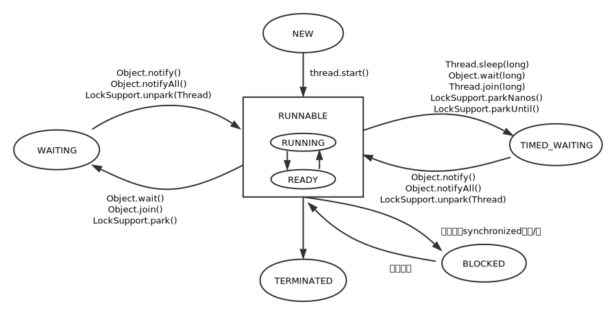

 <!DOCTYPE HTML>
<html lang="zh-CN">
<head><meta name="generator" content="Hexo 3.8.0">
  <meta charset="UTF-8">
  
    <title>第4章 Java并发编程基础 | 一叶轻舟渡万江</title>
    <meta name="viewport" content="width=device-width, initial-scale=1,user-scalable=no">
    
    <meta name="author" content="carl-zk">
    

    
    <meta name="description" content="查看JVM线程信息居然还有这么好的东西1234567891011121314151617181920212223package chapter04;import java.lang.management.ManagementFactory;import java.lang.management.ThreadInfo;import java.lang.management.ThreadMXBean;">
<meta property="og:type" content="article">
<meta property="og:title" content="第4章 Java并发编程基础">
<meta property="og:url" content="https://github.com/carl-zk/blog/2017/03/14/第4章-Java并发编程基础/index.html">
<meta property="og:site_name" content="一叶轻舟渡万江">
<meta property="og:description" content="查看JVM线程信息居然还有这么好的东西1234567891011121314151617181920212223package chapter04;import java.lang.management.ManagementFactory;import java.lang.management.ThreadInfo;import java.lang.management.ThreadMXBean;">
<meta property="og:locale" content="zh-CN">
<meta property="og:image" content="https://github.com/carl-zk/blog/2017/03/14/第4章-Java并发编程基础/state.svg">
<meta property="og:updated_time" content="2019-02-16T01:58:27.860Z">
<meta name="twitter:card" content="summary">
<meta name="twitter:title" content="第4章 Java并发编程基础">
<meta name="twitter:description" content="查看JVM线程信息居然还有这么好的东西1234567891011121314151617181920212223package chapter04;import java.lang.management.ManagementFactory;import java.lang.management.ThreadInfo;import java.lang.management.ThreadMXBean;">
<meta name="twitter:image" content="https://github.com/carl-zk/blog/2017/03/14/第4章-Java并发编程基础/state.svg">

    
    <link rel="alternative" href="/atom.xml" title="一叶轻舟渡万江" type="application/atom+xml">
    
    
    <link rel="icon" href="/blog/img/favicon2.ico">
    
    
    <link rel="apple-touch-icon" href="/blog/img/tx2.jpg">
    <link rel="apple-touch-icon-precomposed" href="/blog/img/tx2.jpg">
    
    <link rel="stylesheet" href="/blog/css/style.css">
</head>
</html>
  <body>
    <header>
      
<div>
		
			<div id="imglogo">
				<a href="/blog/"></a>
			</div>
			
			<div id="textlogo">
				<h1 class="site-name"><a href="/blog/" title="一叶轻舟渡万江">一叶轻舟渡万江</a></h1>
				<h2 class="blog-motto">泰山不拒细壤故能成其高 江海不择细流故能就其深</h2>
			</div>
			<div class="navbar"><a class="navbutton navmobile" href="#" title="菜单">
			</a></div>
			<nav class="animated">
				<ul>
					<ul>
					 
						<li><a href="/blog/">主页</a></li>
					
						<li><a href="/blog/archives">归档</a></li>
					
						<li><a href="/blog/about">关于</a></li>
					
						<li><a href="/blog/door">门户</a></li>
					
					<li>
 					
					<form class="search" action="//google.com/search" method="get" accept-charset="utf-8">
						<label>Search</label>
						<input type="search" id="search" name="q" autocomplete="off" maxlength="20" placeholder="搜索">
						<input type="hidden" name="q" value="site:github.com/carl-zk/blog">
					</form>
					
					</li>
				</ul>
			</ul></nav>			
</div>
    </header>
    <div id="container">
      <div id="main" class="post" itemscope itemprop="blogPost">
  
	<article itemprop="articleBody"> 
		<header class="article-info clearfix">
  <h1 itemprop="name">
    
      <a href="/blog/2017/03/14/第4章-Java并发编程基础/" title="第4章 Java并发编程基础" itemprop="url">第4章 Java并发编程基础</a>
  </h1>
  <p class="article-author">By
       
		<a href="/blog/about" title="carl-zk" target="_blank" itemprop="author">carl-zk</a>
		
  </p><p class="article-time">
    <time datetime="2017-03-14T13:42:18.000Z" itemprop="datePublished"> 发表于 2017-03-14</time>
    
  </p>
</header>
	<div class="article-content">
		
		<div id="toc" class="toc-article">
			<strong class="toc-title">文章目录</strong>
		
			<ol class="toc"><li class="toc-item toc-level-2"><a class="toc-link" href="#查看JVM线程信息"><span class="toc-number">1.</span> <span class="toc-text">查看JVM线程信息</span></a></li><li class="toc-item toc-level-2"><a class="toc-link" href="#线程优先级靠谱吗"><span class="toc-number">2.</span> <span class="toc-text">线程优先级靠谱吗</span></a></li><li class="toc-item toc-level-2"><a class="toc-link" href="#线程的状态"><span class="toc-number">3.</span> <span class="toc-text">线程的状态</span></a></li><li class="toc-item toc-level-2"><a class="toc-link" href="#Daemon线程"><span class="toc-number">4.</span> <span class="toc-text">Daemon线程</span></a></li></ol><li class="toc-item toc-level-1"><a class="toc-link" href="#启动和终止线程"><span class="toc-number"></span> <span class="toc-text">启动和终止线程</span></a><ol class="toc-child"><li class="toc-item toc-level-2"><a class="toc-link" href="#理解中断"><span class="toc-number">1.</span> <span class="toc-text">理解中断</span></a></li><li class="toc-item toc-level-2"><a class="toc-link" href="#优雅的终止线程"><span class="toc-number">2.</span> <span class="toc-text">优雅的终止线程</span></a></li><li class="toc-item toc-level-2"><a class="toc-link" href="#等待-通知机制"><span class="toc-number">3.</span> <span class="toc-text">等待/通知机制</span></a></li><li class="toc-item toc-level-2"><a class="toc-link" href="#ThreadLocal的使用"><span class="toc-number">4.</span> <span class="toc-text">ThreadLocal的使用</span></a></li></ol></li><li class="toc-item toc-level-1"><a class="toc-link" href="#线程应用实例"><span class="toc-number"></span> <span class="toc-text">线程应用实例</span></a><ol class="toc-child"><li class="toc-item toc-level-2"><a class="toc-link" href="#notify和notifyAll的区别"><span class="toc-number">1.</span> <span class="toc-text">notify和notifyAll的区别</span></a></li><li class="toc-item toc-level-2"><a class="toc-link" href="#简单线程池"><span class="toc-number">2.</span> <span class="toc-text">简单线程池</span></a></li><li class="toc-item toc-level-2"><a class="toc-link" href="#线程池示例"><span class="toc-number">3.</span> <span class="toc-text">线程池示例</span></a></li></ol>
		
		</li></div>
		
		<h2 id="查看JVM线程信息"><a href="#查看JVM线程信息" class="headerlink" title="查看JVM线程信息"></a>查看JVM线程信息</h2><p>居然还有这么好的东西<br><figure class="highlight java"><table><tr><td class="gutter"><pre><span class="line">1</span><br><span class="line">2</span><br><span class="line">3</span><br><span class="line">4</span><br><span class="line">5</span><br><span class="line">6</span><br><span class="line">7</span><br><span class="line">8</span><br><span class="line">9</span><br><span class="line">10</span><br><span class="line">11</span><br><span class="line">12</span><br><span class="line">13</span><br><span class="line">14</span><br><span class="line">15</span><br><span class="line">16</span><br><span class="line">17</span><br><span class="line">18</span><br><span class="line">19</span><br><span class="line">20</span><br><span class="line">21</span><br><span class="line">22</span><br><span class="line">23</span><br></pre></td><td class="code"><pre><span class="line"><span class="keyword">package</span> chapter04;</span><br><span class="line"></span><br><span class="line"><span class="keyword">import</span> java.lang.management.ManagementFactory;</span><br><span class="line"><span class="keyword">import</span> java.lang.management.ThreadInfo;</span><br><span class="line"><span class="keyword">import</span> java.lang.management.ThreadMXBean;</span><br><span class="line"></span><br><span class="line"><span class="comment">/**</span></span><br><span class="line"><span class="comment"> * Created by hero on 17-3-14.</span></span><br><span class="line"><span class="comment"> */</span></span><br><span class="line"><span class="keyword">public</span> <span class="class"><span class="keyword">class</span> <span class="title">MultiThread</span> </span>&#123;</span><br><span class="line"></span><br><span class="line">    <span class="function"><span class="keyword">public</span> <span class="keyword">static</span> <span class="keyword">void</span> <span class="title">main</span><span class="params">(String[] args)</span> </span>&#123;</span><br><span class="line">        MultiThread.showThreadsInfo(<span class="keyword">true</span>, <span class="keyword">true</span>);</span><br><span class="line">    &#125;</span><br><span class="line"></span><br><span class="line">    <span class="function"><span class="keyword">public</span> <span class="keyword">static</span> <span class="keyword">void</span> <span class="title">showThreadsInfo</span><span class="params">(<span class="keyword">boolean</span> lockedMonitors, <span class="keyword">boolean</span> lockedSynchronizers)</span> </span>&#123;</span><br><span class="line">        ThreadMXBean threadMXBean = ManagementFactory.getThreadMXBean();</span><br><span class="line">        ThreadInfo[] threadInfos = threadMXBean.dumpAllThreads(lockedMonitors, lockedSynchronizers);</span><br><span class="line">        <span class="keyword">for</span> (ThreadInfo threadInfo : threadInfos) &#123;</span><br><span class="line">            System.out.println(<span class="string">"["</span> + threadInfo.getThreadId() + <span class="string">"] "</span> + threadInfo.getThreadName());</span><br><span class="line">        &#125;</span><br><span class="line">    &#125;</span><br><span class="line">&#125;</span><br></pre></td></tr></table></figure></p>
<h2 id="线程优先级靠谱吗"><a href="#线程优先级靠谱吗" class="headerlink" title="线程优先级靠谱吗"></a>线程优先级靠谱吗</h2><figure class="highlight java"><table><tr><td class="gutter"><pre><span class="line">1</span><br><span class="line">2</span><br><span class="line">3</span><br><span class="line">4</span><br><span class="line">5</span><br><span class="line">6</span><br><span class="line">7</span><br><span class="line">8</span><br><span class="line">9</span><br><span class="line">10</span><br><span class="line">11</span><br><span class="line">12</span><br><span class="line">13</span><br><span class="line">14</span><br><span class="line">15</span><br><span class="line">16</span><br><span class="line">17</span><br><span class="line">18</span><br><span class="line">19</span><br><span class="line">20</span><br><span class="line">21</span><br><span class="line">22</span><br><span class="line">23</span><br><span class="line">24</span><br><span class="line">25</span><br><span class="line">26</span><br><span class="line">27</span><br><span class="line">28</span><br><span class="line">29</span><br><span class="line">30</span><br><span class="line">31</span><br><span class="line">32</span><br><span class="line">33</span><br><span class="line">34</span><br><span class="line">35</span><br><span class="line">36</span><br><span class="line">37</span><br><span class="line">38</span><br><span class="line">39</span><br><span class="line">40</span><br><span class="line">41</span><br><span class="line">42</span><br><span class="line">43</span><br><span class="line">44</span><br><span class="line">45</span><br><span class="line">46</span><br><span class="line">47</span><br><span class="line">48</span><br><span class="line">49</span><br><span class="line">50</span><br><span class="line">51</span><br><span class="line">52</span><br><span class="line">53</span><br><span class="line">54</span><br><span class="line">55</span><br><span class="line">56</span><br><span class="line">57</span><br><span class="line">58</span><br><span class="line">59</span><br><span class="line">60</span><br><span class="line">61</span><br><span class="line">62</span><br><span class="line">63</span><br><span class="line">64</span><br><span class="line">65</span><br><span class="line">66</span><br><span class="line">67</span><br><span class="line">68</span><br></pre></td><td class="code"><pre><span class="line"><span class="keyword">package</span> chapter04;</span><br><span class="line"></span><br><span class="line"><span class="keyword">import</span> java.util.concurrent.CyclicBarrier;</span><br><span class="line"><span class="keyword">import</span> java.util.concurrent.TimeUnit;</span><br><span class="line"></span><br><span class="line"><span class="comment">/**</span></span><br><span class="line"><span class="comment"> * Created by hero on 17-3-14.</span></span><br><span class="line"><span class="comment"> */</span></span><br><span class="line"><span class="keyword">public</span> <span class="class"><span class="keyword">class</span> <span class="title">ThreadPriority</span> </span>&#123;</span><br><span class="line">    <span class="keyword">public</span> <span class="keyword">static</span> <span class="keyword">final</span> <span class="keyword">int</span> _SIZE = <span class="number">10</span>;</span><br><span class="line">    <span class="keyword">private</span> <span class="keyword">volatile</span> <span class="keyword">boolean</span> isEnd;</span><br><span class="line">    <span class="keyword">private</span> CyclicBarrier cyclicBarrier;</span><br><span class="line"></span><br><span class="line">    <span class="function"><span class="keyword">public</span> <span class="title">ThreadPriority</span><span class="params">()</span> </span>&#123;</span><br><span class="line">        cyclicBarrier = <span class="keyword">new</span> CyclicBarrier(_SIZE);</span><br><span class="line">        isEnd = <span class="keyword">false</span>;</span><br><span class="line">    &#125;</span><br><span class="line"></span><br><span class="line">    <span class="function"><span class="keyword">public</span> <span class="keyword">static</span> <span class="keyword">void</span> <span class="title">main</span><span class="params">(String[] args)</span> </span>&#123;</span><br><span class="line">        ThreadPriority threadPriority = <span class="keyword">new</span> ThreadPriority();</span><br><span class="line">        threadPriority.run();</span><br><span class="line">    &#125;</span><br><span class="line"></span><br><span class="line">    <span class="function"><span class="keyword">public</span> <span class="keyword">void</span> <span class="title">run</span><span class="params">()</span> </span>&#123;</span><br><span class="line">        Job[] jobs = <span class="keyword">new</span> Job[_SIZE];</span><br><span class="line">        <span class="keyword">for</span> (<span class="keyword">int</span> i = <span class="number">0</span>; i &lt; _SIZE; i++) &#123;</span><br><span class="line">            <span class="keyword">int</span> priority = i &lt; <span class="number">5</span> ? Thread.MIN_PRIORITY : Thread.MAX_PRIORITY;</span><br><span class="line">            jobs[i] = <span class="keyword">new</span> Job(priority);</span><br><span class="line">            Thread thread = <span class="keyword">new</span> Thread(jobs[i]);</span><br><span class="line">            thread.setPriority(priority);</span><br><span class="line">            thread.start();</span><br><span class="line">        &#125;</span><br><span class="line"></span><br><span class="line">        <span class="keyword">try</span> &#123;</span><br><span class="line">            TimeUnit.SECONDS.sleep(<span class="number">5</span>);</span><br><span class="line">        &#125; <span class="keyword">catch</span> (InterruptedException e) &#123;</span><br><span class="line">            e.printStackTrace();</span><br><span class="line">        &#125;</span><br><span class="line"></span><br><span class="line">        isEnd = <span class="keyword">true</span>;</span><br><span class="line"></span><br><span class="line">        <span class="keyword">for</span> (Job job : jobs) &#123;</span><br><span class="line">            System.out.printf(<span class="string">"%5d %15d\n"</span>, job.priority, job.count);</span><br><span class="line">        &#125;</span><br><span class="line">    &#125;</span><br><span class="line"></span><br><span class="line">    <span class="keyword">private</span> <span class="class"><span class="keyword">class</span> <span class="title">Job</span> <span class="keyword">implements</span> <span class="title">Runnable</span> </span>&#123;</span><br><span class="line">        <span class="keyword">private</span> <span class="keyword">int</span> priority;</span><br><span class="line">        <span class="keyword">private</span> <span class="keyword">int</span> count;</span><br><span class="line"></span><br><span class="line">        <span class="function"><span class="keyword">public</span> <span class="title">Job</span><span class="params">(<span class="keyword">int</span> priority)</span> </span>&#123;</span><br><span class="line">            <span class="keyword">this</span>.priority = priority;</span><br><span class="line">            <span class="keyword">this</span>.count = <span class="number">0</span>;</span><br><span class="line">        &#125;</span><br><span class="line"></span><br><span class="line">        <span class="function"><span class="keyword">public</span> <span class="keyword">void</span> <span class="title">run</span><span class="params">()</span> </span>&#123;</span><br><span class="line">            <span class="keyword">try</span> &#123;</span><br><span class="line">                cyclicBarrier.await();</span><br><span class="line">                <span class="keyword">while</span> (!isEnd) &#123;</span><br><span class="line">                    <span class="keyword">this</span>.count++;</span><br><span class="line">                    Thread.yield();</span><br><span class="line">                &#125;</span><br><span class="line">            &#125; <span class="keyword">catch</span> (Exception e) &#123;</span><br><span class="line">                e.printStackTrace();</span><br><span class="line">            &#125;</span><br><span class="line">        &#125;</span><br><span class="line">    &#125;</span><br><span class="line">&#125;</span><br></pre></td></tr></table></figure>
<p>很显然，你需要运行一下上面的代码。</p>
<h2 id="线程的状态"><a href="#线程的状态" class="headerlink" title="线程的状态"></a>线程的状态</h2><table>
<thead>
<tr>
<th>state</th>
<th>说明</th>
</tr>
</thead>
<tbody>
<tr>
<td>NEW</td>
<td>初始状态，线程被构建，但还没调start()</td>
</tr>
<tr>
<td>RUNNABLE</td>
<td>运行状态，Java将操作系统中的就绪和运行中两种状态笼统称为“RUNNABLE”</td>
</tr>
<tr>
<td>BLOCKED</td>
<td>阻塞状态，表示线程阻塞于锁</td>
</tr>
<tr>
<td>WAITING</td>
<td>等待状态，需要等待其它线程做出一些特定操作（通知或中断）</td>
</tr>
<tr>
<td>TIME_WAITING</td>
<td>超时等待，不同于WAITING，它可以在指定时间后自行返回</td>
</tr>
<tr>
<td>TERMINATED</td>
<td>终止状态，线程执行完毕</td>
</tr>
</tbody>
</table>
<a id="more"></a>
<p></p>
<h2 id="Daemon线程"><a href="#Daemon线程" class="headerlink" title="Daemon线程"></a>Daemon线程</h2><figure class="highlight java"><table><tr><td class="gutter"><pre><span class="line">1</span><br><span class="line">2</span><br><span class="line">3</span><br><span class="line">4</span><br><span class="line">5</span><br><span class="line">6</span><br><span class="line">7</span><br><span class="line">8</span><br><span class="line">9</span><br><span class="line">10</span><br><span class="line">11</span><br><span class="line">12</span><br><span class="line">13</span><br><span class="line">14</span><br><span class="line">15</span><br><span class="line">16</span><br><span class="line">17</span><br><span class="line">18</span><br><span class="line">19</span><br><span class="line">20</span><br><span class="line">21</span><br><span class="line">22</span><br><span class="line">23</span><br><span class="line">24</span><br><span class="line">25</span><br><span class="line">26</span><br><span class="line">27</span><br><span class="line">28</span><br></pre></td><td class="code"><pre><span class="line"><span class="keyword">package</span> chapter04;</span><br><span class="line"></span><br><span class="line"><span class="comment">/**</span></span><br><span class="line"><span class="comment"> * Created by hero on 17-3-15.</span></span><br><span class="line"><span class="comment"> */</span></span><br><span class="line"><span class="keyword">public</span> <span class="class"><span class="keyword">class</span> <span class="title">DaemonThread</span> </span>&#123;</span><br><span class="line"></span><br><span class="line">    <span class="function"><span class="keyword">public</span> <span class="keyword">static</span> <span class="keyword">void</span> <span class="title">run</span><span class="params">()</span> </span>&#123;</span><br><span class="line">        Thread daemon = <span class="keyword">new</span> Thread(<span class="keyword">new</span> Runnable() &#123;</span><br><span class="line">            <span class="function"><span class="keyword">public</span> <span class="keyword">void</span> <span class="title">run</span><span class="params">()</span> </span>&#123;</span><br><span class="line">                <span class="keyword">try</span> &#123;</span><br><span class="line">                    System.out.println(<span class="string">"daemon running..."</span>);</span><br><span class="line">                &#125; <span class="keyword">finally</span> &#123;</span><br><span class="line">                    <span class="comment">/**</span></span><br><span class="line"><span class="comment">                     * finally may not be executed</span></span><br><span class="line"><span class="comment">                     */</span></span><br><span class="line">                    System.out.println(<span class="string">"hello world"</span>);</span><br><span class="line">                &#125;</span><br><span class="line">            &#125;</span><br><span class="line">        &#125;);</span><br><span class="line">        daemon.setDaemon(<span class="keyword">true</span>);</span><br><span class="line">        daemon.start();</span><br><span class="line">    &#125;</span><br><span class="line"></span><br><span class="line">    <span class="function"><span class="keyword">public</span> <span class="keyword">static</span> <span class="keyword">void</span> <span class="title">main</span><span class="params">(String[] args)</span> </span>&#123;</span><br><span class="line">        run();</span><br><span class="line">    &#125;</span><br><span class="line">&#125;</span><br></pre></td></tr></table></figure>
<p><strong>daemon线程中的finally有可能不会被执行。</strong><br>JVM中若不存在非daemon线程时，会将Daemon线程立即终止，这样就会造成finally不会被执行。</p>
<h1 id="启动和终止线程"><a href="#启动和终止线程" class="headerlink" title="启动和终止线程"></a>启动和终止线程</h1><p>规范：最好给自定义的线程起个名字，便于jstack分析等。</p>
<h2 id="理解中断"><a href="#理解中断" class="headerlink" title="理解中断"></a>理解中断</h2><figure class="highlight java"><table><tr><td class="gutter"><pre><span class="line">1</span><br><span class="line">2</span><br><span class="line">3</span><br><span class="line">4</span><br><span class="line">5</span><br><span class="line">6</span><br><span class="line">7</span><br><span class="line">8</span><br><span class="line">9</span><br><span class="line">10</span><br><span class="line">11</span><br><span class="line">12</span><br><span class="line">13</span><br><span class="line">14</span><br><span class="line">15</span><br><span class="line">16</span><br><span class="line">17</span><br><span class="line">18</span><br><span class="line">19</span><br><span class="line">20</span><br><span class="line">21</span><br><span class="line">22</span><br><span class="line">23</span><br><span class="line">24</span><br><span class="line">25</span><br><span class="line">26</span><br><span class="line">27</span><br><span class="line">28</span><br><span class="line">29</span><br><span class="line">30</span><br><span class="line">31</span><br><span class="line">32</span><br><span class="line">33</span><br><span class="line">34</span><br><span class="line">35</span><br><span class="line">36</span><br><span class="line">37</span><br><span class="line">38</span><br><span class="line">39</span><br><span class="line">40</span><br><span class="line">41</span><br><span class="line">42</span><br><span class="line">43</span><br><span class="line">44</span><br><span class="line">45</span><br><span class="line">46</span><br><span class="line">47</span><br><span class="line">48</span><br><span class="line">49</span><br><span class="line">50</span><br><span class="line">51</span><br><span class="line">52</span><br><span class="line">53</span><br><span class="line">54</span><br><span class="line">55</span><br></pre></td><td class="code"><pre><span class="line"><span class="keyword">package</span> chapter04;</span><br><span class="line"></span><br><span class="line"><span class="keyword">import</span> java.util.concurrent.TimeUnit;</span><br><span class="line"></span><br><span class="line"><span class="comment">/**</span></span><br><span class="line"><span class="comment"> * Created by hero on 17-3-15.</span></span><br><span class="line"><span class="comment"> */</span></span><br><span class="line"><span class="keyword">public</span> <span class="class"><span class="keyword">class</span> <span class="title">InterruptYou</span> </span>&#123;</span><br><span class="line"></span><br><span class="line">    <span class="function"><span class="keyword">public</span> <span class="keyword">static</span> <span class="keyword">void</span> <span class="title">main</span><span class="params">(String[] args)</span> </span>&#123;</span><br><span class="line">        InterruptYou test = <span class="keyword">new</span> InterruptYou();</span><br><span class="line">        test.run();</span><br><span class="line">    &#125;</span><br><span class="line"></span><br><span class="line">    <span class="function"><span class="keyword">public</span> <span class="keyword">void</span> <span class="title">run</span><span class="params">()</span> </span>&#123;</span><br><span class="line">        Thread sleepBeauty = <span class="keyword">new</span> Thread(<span class="keyword">new</span> sleepRunner(), <span class="string">"sleepBeauty"</span>);</span><br><span class="line">        Thread keepRunning = <span class="keyword">new</span> Thread(<span class="keyword">new</span> keepingRunner(), <span class="string">"keepRunning"</span>);</span><br><span class="line">        sleepBeauty.start();</span><br><span class="line">        keepRunning.start();</span><br><span class="line">        <span class="keyword">try</span> &#123;</span><br><span class="line">            TimeUnit.SECONDS.sleep(<span class="number">3</span>);</span><br><span class="line">        &#125; <span class="keyword">catch</span> (InterruptedException e) &#123;</span><br><span class="line">            e.printStackTrace();</span><br><span class="line">        &#125;</span><br><span class="line">        sleepBeauty.interrupt();</span><br><span class="line">        keepRunning.interrupt();</span><br><span class="line">        System.out.println(<span class="string">"sleep "</span> + sleepBeauty.isInterrupted());</span><br><span class="line">        System.out.println(<span class="string">"keep "</span> + keepRunning.isInterrupted());</span><br><span class="line">    &#125;</span><br><span class="line"></span><br><span class="line">    <span class="keyword">private</span> <span class="class"><span class="keyword">class</span> <span class="title">sleepRunner</span> <span class="keyword">implements</span> <span class="title">Runnable</span> </span>&#123;</span><br><span class="line"></span><br><span class="line">        <span class="function"><span class="keyword">public</span> <span class="keyword">void</span> <span class="title">run</span><span class="params">()</span> </span>&#123;</span><br><span class="line">            <span class="keyword">try</span> &#123;</span><br><span class="line">                TimeUnit.SECONDS.sleep(<span class="number">100</span>);</span><br><span class="line">            &#125; <span class="keyword">catch</span> (InterruptedException e) &#123;</span><br><span class="line">                e.printStackTrace();</span><br><span class="line">            &#125; <span class="keyword">finally</span> &#123;</span><br><span class="line">                System.out.println(<span class="string">"wow"</span>);</span><br><span class="line">            &#125;</span><br><span class="line">        &#125;</span><br><span class="line">    &#125;</span><br><span class="line"></span><br><span class="line">    <span class="keyword">private</span> <span class="class"><span class="keyword">class</span> <span class="title">keepingRunner</span> <span class="keyword">implements</span> <span class="title">Runnable</span> </span>&#123;</span><br><span class="line"></span><br><span class="line">        <span class="function"><span class="keyword">public</span> <span class="keyword">void</span> <span class="title">run</span><span class="params">()</span> </span>&#123;</span><br><span class="line">            <span class="keyword">try</span> &#123;</span><br><span class="line">                <span class="keyword">while</span> (<span class="keyword">true</span>) &#123;</span><br><span class="line">                &#125;</span><br><span class="line">            &#125; <span class="keyword">finally</span> &#123;</span><br><span class="line">                System.out.println(<span class="string">"hoops"</span>);</span><br><span class="line">            &#125;</span><br><span class="line">        &#125;</span><br><span class="line">    &#125;</span><br><span class="line">&#125;</span><br></pre></td></tr></table></figure>
<p>一个线程被成功中断，那它的中断标志位被复位，即置成false，随后抛出中断异常。<br>若被中断骚扰了一下并没有停止，那中断标志位就会置成true。</p>
<h2 id="优雅的终止线程"><a href="#优雅的终止线程" class="headerlink" title="优雅的终止线程"></a>优雅的终止线程</h2><figure class="highlight java"><table><tr><td class="gutter"><pre><span class="line">1</span><br><span class="line">2</span><br><span class="line">3</span><br><span class="line">4</span><br><span class="line">5</span><br><span class="line">6</span><br><span class="line">7</span><br><span class="line">8</span><br><span class="line">9</span><br><span class="line">10</span><br><span class="line">11</span><br><span class="line">12</span><br><span class="line">13</span><br><span class="line">14</span><br><span class="line">15</span><br><span class="line">16</span><br><span class="line">17</span><br><span class="line">18</span><br><span class="line">19</span><br><span class="line">20</span><br><span class="line">21</span><br><span class="line">22</span><br><span class="line">23</span><br><span class="line">24</span><br><span class="line">25</span><br><span class="line">26</span><br><span class="line">27</span><br><span class="line">28</span><br><span class="line">29</span><br><span class="line">30</span><br><span class="line">31</span><br><span class="line">32</span><br><span class="line">33</span><br><span class="line">34</span><br><span class="line">35</span><br><span class="line">36</span><br><span class="line">37</span><br><span class="line">38</span><br><span class="line">39</span><br><span class="line">40</span><br><span class="line">41</span><br><span class="line">42</span><br><span class="line">43</span><br><span class="line">44</span><br><span class="line">45</span><br><span class="line">46</span><br><span class="line">47</span><br><span class="line">48</span><br></pre></td><td class="code"><pre><span class="line"><span class="keyword">package</span> chapter04;</span><br><span class="line"></span><br><span class="line"><span class="keyword">import</span> java.util.concurrent.TimeUnit;</span><br><span class="line"></span><br><span class="line"><span class="comment">/**</span></span><br><span class="line"><span class="comment"> * Created by hero on 17-3-15.</span></span><br><span class="line"><span class="comment"> */</span></span><br><span class="line"><span class="keyword">public</span> <span class="class"><span class="keyword">class</span> <span class="title">ElegantTerminate</span> </span>&#123;</span><br><span class="line"></span><br><span class="line">    <span class="function"><span class="keyword">public</span> <span class="keyword">static</span> <span class="keyword">void</span> <span class="title">main</span><span class="params">(String[] args)</span> </span>&#123;</span><br><span class="line">        <span class="keyword">new</span> ElegantTerminate().run();</span><br><span class="line">    &#125;</span><br><span class="line"></span><br><span class="line">    <span class="function"><span class="keyword">public</span> <span class="keyword">void</span> <span class="title">run</span><span class="params">()</span> </span>&#123;</span><br><span class="line">        Runner runner = <span class="keyword">new</span> Runner();</span><br><span class="line">        Thread thread = <span class="keyword">new</span> Thread(runner, <span class="string">"control terminate"</span>);</span><br><span class="line">        thread.start();</span><br><span class="line">        <span class="keyword">try</span> &#123;</span><br><span class="line">            TimeUnit.SECONDS.sleep(<span class="number">2</span>);</span><br><span class="line">        &#125; <span class="keyword">catch</span> (InterruptedException e) &#123;</span><br><span class="line">            e.printStackTrace();</span><br><span class="line">        &#125;</span><br><span class="line">        runner.cancel();</span><br><span class="line">    &#125;</span><br><span class="line"></span><br><span class="line">    <span class="keyword">private</span> <span class="class"><span class="keyword">class</span> <span class="title">Runner</span> <span class="keyword">implements</span> <span class="title">Runnable</span> </span>&#123;</span><br><span class="line">        <span class="keyword">private</span> <span class="keyword">volatile</span> <span class="keyword">boolean</span> isOn;</span><br><span class="line"></span><br><span class="line">        <span class="function"><span class="keyword">public</span> <span class="title">Runner</span><span class="params">()</span> </span>&#123;</span><br><span class="line">            isOn = <span class="keyword">true</span>;</span><br><span class="line">        &#125;</span><br><span class="line"></span><br><span class="line">        <span class="function"><span class="keyword">public</span> <span class="keyword">void</span> <span class="title">run</span><span class="params">()</span> </span>&#123;</span><br><span class="line">            <span class="keyword">while</span> (isOn) &#123;</span><br><span class="line">                System.out.println(<span class="string">"I'm running"</span>);</span><br><span class="line">                <span class="keyword">try</span> &#123;</span><br><span class="line">                    TimeUnit.MILLISECONDS.sleep(<span class="number">200</span>);</span><br><span class="line">                &#125; <span class="keyword">catch</span> (InterruptedException e) &#123;</span><br><span class="line">                    e.printStackTrace();</span><br><span class="line">                &#125;</span><br><span class="line">            &#125;</span><br><span class="line">        &#125;</span><br><span class="line"></span><br><span class="line">        <span class="function"><span class="keyword">public</span> <span class="keyword">void</span> <span class="title">cancel</span><span class="params">()</span> </span>&#123;</span><br><span class="line">            isOn = <span class="keyword">false</span>;</span><br><span class="line">        &#125;</span><br><span class="line">    &#125;</span><br><span class="line">&#125;</span><br></pre></td></tr></table></figure>
<h2 id="等待-通知机制"><a href="#等待-通知机制" class="headerlink" title="等待/通知机制"></a>等待/通知机制</h2><blockquote>
<p>原来线程被唤醒是从wait()之后开始执行，保存了线程上下文的。<br>我之前以为是线程重新从头开始执行，唉，惭愧惭愧！</p>
</blockquote>
<figure class="highlight java"><table><tr><td class="gutter"><pre><span class="line">1</span><br><span class="line">2</span><br><span class="line">3</span><br><span class="line">4</span><br><span class="line">5</span><br><span class="line">6</span><br><span class="line">7</span><br><span class="line">8</span><br><span class="line">9</span><br><span class="line">10</span><br><span class="line">11</span><br><span class="line">12</span><br><span class="line">13</span><br><span class="line">14</span><br><span class="line">15</span><br><span class="line">16</span><br><span class="line">17</span><br><span class="line">18</span><br><span class="line">19</span><br><span class="line">20</span><br><span class="line">21</span><br><span class="line">22</span><br><span class="line">23</span><br><span class="line">24</span><br><span class="line">25</span><br><span class="line">26</span><br><span class="line">27</span><br><span class="line">28</span><br><span class="line">29</span><br><span class="line">30</span><br><span class="line">31</span><br><span class="line">32</span><br><span class="line">33</span><br><span class="line">34</span><br><span class="line">35</span><br><span class="line">36</span><br><span class="line">37</span><br><span class="line">38</span><br><span class="line">39</span><br><span class="line">40</span><br><span class="line">41</span><br><span class="line">42</span><br><span class="line">43</span><br><span class="line">44</span><br><span class="line">45</span><br><span class="line">46</span><br><span class="line">47</span><br><span class="line">48</span><br><span class="line">49</span><br><span class="line">50</span><br><span class="line">51</span><br><span class="line">52</span><br><span class="line">53</span><br><span class="line">54</span><br><span class="line">55</span><br><span class="line">56</span><br></pre></td><td class="code"><pre><span class="line"><span class="keyword">package</span> chapter04;</span><br><span class="line"></span><br><span class="line"><span class="keyword">import</span> java.util.concurrent.TimeUnit;</span><br><span class="line"></span><br><span class="line"><span class="comment">/**</span></span><br><span class="line"><span class="comment"> * Created by hero on 17-3-15.</span></span><br><span class="line"><span class="comment"> */</span></span><br><span class="line"><span class="keyword">public</span> <span class="class"><span class="keyword">class</span> <span class="title">NotifyWait</span> </span>&#123;</span><br><span class="line">    <span class="keyword">private</span> <span class="keyword">static</span> Object lock = <span class="keyword">new</span> Object();</span><br><span class="line">    <span class="keyword">private</span> <span class="keyword">boolean</span> flag = <span class="keyword">true</span>;</span><br><span class="line"></span><br><span class="line">    <span class="function"><span class="keyword">public</span> <span class="keyword">void</span> <span class="title">run</span><span class="params">()</span> <span class="keyword">throws</span> InterruptedException </span>&#123;</span><br><span class="line">        Thread teacher = <span class="keyword">new</span> Thread(<span class="keyword">new</span> Notifier(), <span class="string">"hello"</span>);</span><br><span class="line">        Thread student = <span class="keyword">new</span> Thread(<span class="keyword">new</span> Waiter(), <span class="string">"world"</span>);</span><br><span class="line"></span><br><span class="line">        student.start();</span><br><span class="line">        TimeUnit.SECONDS.sleep(<span class="number">2</span>);</span><br><span class="line">        teacher.start();</span><br><span class="line">    &#125;</span><br><span class="line"></span><br><span class="line">    <span class="function"><span class="keyword">public</span> <span class="keyword">static</span> <span class="keyword">void</span> <span class="title">main</span><span class="params">(String[] args)</span> <span class="keyword">throws</span> InterruptedException </span>&#123;</span><br><span class="line">        <span class="keyword">new</span> NotifyWait().run();</span><br><span class="line">    &#125;</span><br><span class="line"></span><br><span class="line">    <span class="keyword">private</span> <span class="class"><span class="keyword">class</span> <span class="title">Notifier</span> <span class="keyword">implements</span> <span class="title">Runnable</span> </span>&#123;</span><br><span class="line"></span><br><span class="line">        <span class="function"><span class="keyword">public</span> <span class="keyword">void</span> <span class="title">run</span><span class="params">()</span> </span>&#123;</span><br><span class="line">            <span class="keyword">synchronized</span> (lock) &#123;</span><br><span class="line">                flag = <span class="keyword">false</span>;</span><br><span class="line">                System.out.println(<span class="string">"Notifier"</span>);</span><br><span class="line">                lock.notify();</span><br><span class="line">            &#125;</span><br><span class="line">        &#125;</span><br><span class="line">    &#125;</span><br><span class="line"></span><br><span class="line">    <span class="keyword">private</span> <span class="class"><span class="keyword">class</span> <span class="title">Waiter</span> <span class="keyword">implements</span> <span class="title">Runnable</span> </span>&#123;</span><br><span class="line"></span><br><span class="line">        <span class="function"><span class="keyword">public</span> <span class="keyword">void</span> <span class="title">run</span><span class="params">()</span> </span>&#123;</span><br><span class="line">            <span class="keyword">synchronized</span> (lock) &#123;</span><br><span class="line">                System.out.println(<span class="string">"抢一把锁"</span>);</span><br><span class="line">                <span class="keyword">while</span> (flag) &#123;</span><br><span class="line">                    <span class="keyword">try</span> &#123;</span><br><span class="line">                        System.out.println(<span class="string">"我要睡了"</span>);</span><br><span class="line">                        lock.wait();</span><br><span class="line">                        System.out.println(<span class="string">"把我叫醒"</span>);</span><br><span class="line">                    &#125; <span class="keyword">catch</span> (InterruptedException e) &#123;</span><br><span class="line">                        e.printStackTrace();</span><br><span class="line">                    &#125;</span><br><span class="line">                &#125;</span><br><span class="line">                System.out.println(<span class="string">"Waiter"</span>);</span><br><span class="line">                lock.notify();</span><br><span class="line">            &#125;</span><br><span class="line">        &#125;</span><br><span class="line"></span><br><span class="line">    &#125;</span><br><span class="line">&#125;</span><br></pre></td></tr></table></figure>
<h2 id="ThreadLocal的使用"><a href="#ThreadLocal的使用" class="headerlink" title="ThreadLocal的使用"></a>ThreadLocal的使用</h2><figure class="highlight java"><table><tr><td class="gutter"><pre><span class="line">1</span><br><span class="line">2</span><br><span class="line">3</span><br><span class="line">4</span><br><span class="line">5</span><br><span class="line">6</span><br><span class="line">7</span><br><span class="line">8</span><br><span class="line">9</span><br><span class="line">10</span><br><span class="line">11</span><br><span class="line">12</span><br><span class="line">13</span><br><span class="line">14</span><br><span class="line">15</span><br><span class="line">16</span><br><span class="line">17</span><br><span class="line">18</span><br><span class="line">19</span><br><span class="line">20</span><br><span class="line">21</span><br><span class="line">22</span><br><span class="line">23</span><br><span class="line">24</span><br><span class="line">25</span><br><span class="line">26</span><br><span class="line">27</span><br><span class="line">28</span><br><span class="line">29</span><br><span class="line">30</span><br><span class="line">31</span><br><span class="line">32</span><br><span class="line">33</span><br><span class="line">34</span><br><span class="line">35</span><br><span class="line">36</span><br><span class="line">37</span><br><span class="line">38</span><br><span class="line">39</span><br><span class="line">40</span><br><span class="line">41</span><br></pre></td><td class="code"><pre><span class="line"><span class="keyword">package</span> chapter04;</span><br><span class="line"></span><br><span class="line"><span class="keyword">import</span> java.util.concurrent.TimeUnit;</span><br><span class="line"></span><br><span class="line"><span class="comment">/**</span></span><br><span class="line"><span class="comment"> * Created by hero on 17-3-16.</span></span><br><span class="line"><span class="comment"> */</span></span><br><span class="line"><span class="keyword">public</span> <span class="class"><span class="keyword">class</span> <span class="title">MarkInThread</span> </span>&#123;</span><br><span class="line">    <span class="keyword">public</span> <span class="keyword">static</span> <span class="keyword">final</span> ThreadLocal&lt;Integer&gt; flag = <span class="keyword">new</span> ThreadLocal&lt;Integer&gt;();</span><br><span class="line"></span><br><span class="line">    <span class="function"><span class="keyword">public</span> <span class="keyword">void</span> <span class="title">copyA</span><span class="params">()</span> </span>&#123;</span><br><span class="line">        flag.set(<span class="number">8</span>);</span><br><span class="line">        System.out.println(flag.get());</span><br><span class="line">    &#125;</span><br><span class="line"></span><br><span class="line">    <span class="function"><span class="keyword">public</span> <span class="keyword">void</span> <span class="title">copyB</span><span class="params">()</span> </span>&#123;</span><br><span class="line">        System.out.println(flag.get());</span><br><span class="line">    &#125;</span><br><span class="line"></span><br><span class="line">    <span class="function"><span class="keyword">public</span> <span class="keyword">static</span> <span class="keyword">void</span> <span class="title">main</span><span class="params">(String[] args)</span> </span>&#123;</span><br><span class="line">        MarkInThread test = <span class="keyword">new</span> MarkInThread();</span><br><span class="line">        test.run();</span><br><span class="line">    &#125;</span><br><span class="line"></span><br><span class="line">    <span class="function"><span class="keyword">public</span> <span class="keyword">void</span> <span class="title">run</span><span class="params">()</span> </span>&#123;</span><br><span class="line"></span><br><span class="line">        Thread w = <span class="keyword">new</span> Thread(<span class="keyword">new</span> Runnable() &#123;</span><br><span class="line">            <span class="function"><span class="keyword">public</span> <span class="keyword">void</span> <span class="title">run</span><span class="params">()</span> </span>&#123;</span><br><span class="line">                copyA();</span><br><span class="line">            &#125;</span><br><span class="line">        &#125;, <span class="string">"copyA"</span>);</span><br><span class="line">        Thread r = <span class="keyword">new</span> Thread(<span class="keyword">new</span> Runnable() &#123;</span><br><span class="line">            <span class="function"><span class="keyword">public</span> <span class="keyword">void</span> <span class="title">run</span><span class="params">()</span> </span>&#123;</span><br><span class="line">                copyB();</span><br><span class="line">            &#125;</span><br><span class="line">        &#125;, <span class="string">"copyB"</span>);</span><br><span class="line"></span><br><span class="line">        w.start();</span><br><span class="line">        r.start();</span><br><span class="line">    &#125;</span><br><span class="line">&#125;</span><br></pre></td></tr></table></figure>
<p>ThreadLocal对象的set(value)方法会将value写到当前thread的map&lt;ThreadLocal, Object&gt;中，而且key是弱引用。<br>好处是get和set可以在不同方法或者类中，但是要看清，必须在同一个线程哦。<br>重写initialValue方法就是为避免未调过set而直接调get得到null。<br>当本地map为null时setInitialValue会调这个重写的方法，就是多态么。<br><figure class="highlight java"><table><tr><td class="gutter"><pre><span class="line">1</span><br><span class="line">2</span><br><span class="line">3</span><br><span class="line">4</span><br><span class="line">5</span><br></pre></td><td class="code"><pre><span class="line">ThreadLocal&lt;Integer&gt; flag = <span class="keyword">new</span> ThreadLocal&lt;Integer&gt;() &#123;</span><br><span class="line">        <span class="meta">@Override</span></span><br><span class="line">        <span class="function"><span class="keyword">protected</span> Integer <span class="title">initialValue</span><span class="params">()</span> </span>&#123;</span><br><span class="line">            <span class="keyword">return</span> <span class="number">0</span>;</span><br><span class="line">        &#125;</span><br></pre></td></tr></table></figure></p>
<h1 id="线程应用实例"><a href="#线程应用实例" class="headerlink" title="线程应用实例"></a>线程应用实例</h1><h2 id="notify和notifyAll的区别"><a href="#notify和notifyAll的区别" class="headerlink" title="notify和notifyAll的区别"></a>notify和notifyAll的区别</h2><figure class="highlight java"><table><tr><td class="gutter"><pre><span class="line">1</span><br><span class="line">2</span><br><span class="line">3</span><br><span class="line">4</span><br><span class="line">5</span><br><span class="line">6</span><br><span class="line">7</span><br><span class="line">8</span><br><span class="line">9</span><br><span class="line">10</span><br><span class="line">11</span><br><span class="line">12</span><br><span class="line">13</span><br><span class="line">14</span><br><span class="line">15</span><br><span class="line">16</span><br><span class="line">17</span><br><span class="line">18</span><br><span class="line">19</span><br><span class="line">20</span><br><span class="line">21</span><br><span class="line">22</span><br><span class="line">23</span><br><span class="line">24</span><br><span class="line">25</span><br><span class="line">26</span><br><span class="line">27</span><br><span class="line">28</span><br><span class="line">29</span><br><span class="line">30</span><br><span class="line">31</span><br><span class="line">32</span><br><span class="line">33</span><br><span class="line">34</span><br><span class="line">35</span><br><span class="line">36</span><br><span class="line">37</span><br><span class="line">38</span><br><span class="line">39</span><br><span class="line">40</span><br><span class="line">41</span><br><span class="line">42</span><br><span class="line">43</span><br><span class="line">44</span><br><span class="line">45</span><br><span class="line">46</span><br><span class="line">47</span><br><span class="line">48</span><br><span class="line">49</span><br><span class="line">50</span><br><span class="line">51</span><br><span class="line">52</span><br></pre></td><td class="code"><pre><span class="line"><span class="keyword">package</span> chapter04;</span><br><span class="line"></span><br><span class="line"><span class="keyword">import</span> java.util.concurrent.TimeUnit;</span><br><span class="line"></span><br><span class="line"><span class="comment">/**</span></span><br><span class="line"><span class="comment"> * Created by hero on 17-3-18.</span></span><br><span class="line"><span class="comment"> */</span></span><br><span class="line"><span class="keyword">public</span> <span class="class"><span class="keyword">class</span> <span class="title">DiffNotify</span> </span>&#123;</span><br><span class="line"></span><br><span class="line">    <span class="function"><span class="keyword">public</span> <span class="keyword">static</span> <span class="keyword">void</span> <span class="title">main</span><span class="params">(String[] args)</span> <span class="keyword">throws</span> InterruptedException </span>&#123;</span><br><span class="line">        <span class="keyword">new</span> DiffNotify().run();</span><br><span class="line">    &#125;</span><br><span class="line"></span><br><span class="line">    <span class="function"><span class="keyword">public</span> <span class="keyword">void</span> <span class="title">run</span><span class="params">()</span> <span class="keyword">throws</span> InterruptedException </span>&#123;</span><br><span class="line">        <span class="keyword">final</span> Object lock = <span class="keyword">new</span> Object();</span><br><span class="line">        Thread t1 = <span class="keyword">new</span> Thread(<span class="keyword">new</span> Runnable() &#123;</span><br><span class="line">            <span class="function"><span class="keyword">public</span> <span class="keyword">void</span> <span class="title">run</span><span class="params">()</span> </span>&#123;</span><br><span class="line">                <span class="keyword">synchronized</span> (lock) &#123;</span><br><span class="line">                    <span class="keyword">try</span> &#123;</span><br><span class="line">                        lock.wait(<span class="number">10</span> * <span class="number">1000</span>);</span><br><span class="line">                        System.out.println(<span class="string">"t1"</span>);</span><br><span class="line"></span><br><span class="line">                    &#125; <span class="keyword">catch</span> (InterruptedException e) &#123;</span><br><span class="line">                        e.printStackTrace();</span><br><span class="line">                    &#125;</span><br><span class="line">                &#125;</span><br><span class="line">            &#125;</span><br><span class="line">        &#125;);</span><br><span class="line">        Thread t2 = <span class="keyword">new</span> Thread(<span class="keyword">new</span> Runnable() &#123;</span><br><span class="line">            <span class="function"><span class="keyword">public</span> <span class="keyword">void</span> <span class="title">run</span><span class="params">()</span> </span>&#123;</span><br><span class="line">                <span class="keyword">synchronized</span> (lock) &#123;</span><br><span class="line">                    <span class="keyword">try</span> &#123;</span><br><span class="line">                        lock.wait(<span class="number">10</span> * <span class="number">1000</span>);</span><br><span class="line">                        System.out.println(<span class="string">"t2"</span>);</span><br><span class="line">                    &#125; <span class="keyword">catch</span> (InterruptedException e) &#123;</span><br><span class="line">                        e.printStackTrace();</span><br><span class="line">                    &#125;</span><br><span class="line">                &#125;</span><br><span class="line">            &#125;</span><br><span class="line">        &#125;);</span><br><span class="line"></span><br><span class="line">        t1.start();</span><br><span class="line">        t2.start();</span><br><span class="line"></span><br><span class="line">        TimeUnit.SECONDS.sleep(<span class="number">1</span>);</span><br><span class="line"></span><br><span class="line">        <span class="keyword">synchronized</span> (lock) &#123;</span><br><span class="line">            lock.notifyAll();</span><br><span class="line">            <span class="comment">//lock.notify();</span></span><br><span class="line">        &#125;</span><br><span class="line">    &#125;</span><br><span class="line">&#125;</span><br></pre></td></tr></table></figure>
<p>搞懂notify和notifyAll的区别在设计连接池中比较有用，并且在设计其它程序时可以根据它们的特性进行最优选择。<br>还记得线程有哪些状态吗？notify和notifyAll都是把在WAITING状态的线程叫醒，区别在于notify只叫一个，notifyAll是叫醒所有。<br>醒来的线程并不是直接进入RUNNABLE的，这个图中画的不准确。而是进入BLOCKED，因为要重新对锁的获取。notify的还好说，<br>关键是notifyAll的那些，如果它们被叫醒并且又没有争到锁，它们会去哪。<br>它们还是会在BLOCKED状态，继续等着下一轮的竞争。</p>
<p>分别运行上面的程序，就会发现：<br>当lock.notifyAll的时候，第1个线程释放锁之后第2个马上就得到锁，两个线程非常快都结束了。<br>当lock.notify的时候，第2个线程要等到timeout了才结束，而第1个获取了锁的线程早早的已经把锁释放了，只是由于没有notify一下，所以<br>第2个线程只能在等待队列中继续等着。</p>
<p>区别很明显了，那什么时候用notify，什么时候用notifyAll呢？聪明的你肯定会列出它俩的优缺点比较一下吧。<br>我就说个简单的区别，notifyAll会把所有等待线程叫醒，让它们一起竞争。它们竞争一轮就会有一个线程得到锁，竞争N轮之后到最后一个线程也<br>得到锁才算结束。如果有大量的等待线程，而它们每个对锁占有很长时间之后才释放，这就会造成有大量的BLOCKED线程在浪费cpu，不推荐。<br>如果它们对锁的占有时间少，并且接下来它们抢的资源不构成竞争关系，那就notifyAll好了，因为这样就不必每次释放锁都要notify一下。</p>
<h2 id="简单线程池"><a href="#简单线程池" class="headerlink" title="简单线程池"></a>简单线程池</h2><p>池子是一个95后脱口秀演员，额，sorry，今天不聊他。<br>一言不合就上代码：<br><figure class="highlight java"><table><tr><td class="gutter"><pre><span class="line">1</span><br><span class="line">2</span><br><span class="line">3</span><br><span class="line">4</span><br><span class="line">5</span><br><span class="line">6</span><br><span class="line">7</span><br><span class="line">8</span><br><span class="line">9</span><br><span class="line">10</span><br><span class="line">11</span><br><span class="line">12</span><br><span class="line">13</span><br><span class="line">14</span><br><span class="line">15</span><br><span class="line">16</span><br><span class="line">17</span><br><span class="line">18</span><br><span class="line">19</span><br><span class="line">20</span><br><span class="line">21</span><br><span class="line">22</span><br><span class="line">23</span><br><span class="line">24</span><br><span class="line">25</span><br><span class="line">26</span><br><span class="line">27</span><br><span class="line">28</span><br><span class="line">29</span><br><span class="line">30</span><br><span class="line">31</span><br><span class="line">32</span><br><span class="line">33</span><br><span class="line">34</span><br><span class="line">35</span><br><span class="line">36</span><br><span class="line">37</span><br><span class="line">38</span><br><span class="line">39</span><br><span class="line">40</span><br><span class="line">41</span><br><span class="line">42</span><br><span class="line">43</span><br><span class="line">44</span><br><span class="line">45</span><br><span class="line">46</span><br><span class="line">47</span><br><span class="line">48</span><br><span class="line">49</span><br><span class="line">50</span><br><span class="line">51</span><br><span class="line">52</span><br><span class="line">53</span><br><span class="line">54</span><br><span class="line">55</span><br><span class="line">56</span><br><span class="line">57</span><br><span class="line">58</span><br><span class="line">59</span><br><span class="line">60</span><br><span class="line">61</span><br><span class="line">62</span><br><span class="line">63</span><br><span class="line">64</span><br><span class="line">65</span><br><span class="line">66</span><br><span class="line">67</span><br><span class="line">68</span><br></pre></td><td class="code"><pre><span class="line"><span class="keyword">package</span> chapter04;</span><br><span class="line"></span><br><span class="line"><span class="keyword">import</span> java.sql.Connection;</span><br><span class="line"><span class="keyword">import</span> java.util.concurrent.CountDownLatch;</span><br><span class="line"><span class="keyword">import</span> java.util.concurrent.atomic.AtomicInteger;</span><br><span class="line"></span><br><span class="line"><span class="comment">/**</span></span><br><span class="line"><span class="comment"> * Created by hero on 17-3-18.</span></span><br><span class="line"><span class="comment"> */</span></span><br><span class="line"><span class="keyword">public</span> <span class="class"><span class="keyword">class</span> <span class="title">ConnectionPoolTest</span> </span>&#123;</span><br><span class="line">    <span class="keyword">static</span> <span class="keyword">final</span> <span class="keyword">int</span> _COUNT = <span class="number">100</span>;</span><br><span class="line">    <span class="keyword">static</span> <span class="keyword">final</span> <span class="keyword">int</span> _SIZE = <span class="number">8</span>;</span><br><span class="line">    <span class="keyword">static</span> <span class="keyword">final</span> <span class="keyword">long</span> _WAIT_TIME_IN_MILLIS = <span class="number">100</span>;</span><br><span class="line">    <span class="keyword">static</span> PoolA pool = <span class="keyword">new</span> PoolA(_SIZE);</span><br><span class="line">    <span class="keyword">static</span> CountDownLatch start = <span class="keyword">new</span> CountDownLatch(<span class="number">1</span>);</span><br><span class="line">    <span class="keyword">static</span> CountDownLatch end;</span><br><span class="line"></span><br><span class="line">    <span class="function"><span class="keyword">public</span> <span class="keyword">static</span> <span class="keyword">void</span> <span class="title">main</span><span class="params">(String[] args)</span> <span class="keyword">throws</span> InterruptedException </span>&#123;</span><br><span class="line">        end = <span class="keyword">new</span> CountDownLatch(_COUNT);</span><br><span class="line">        AtomicInteger got = <span class="keyword">new</span> AtomicInteger();</span><br><span class="line">        AtomicInteger notGot = <span class="keyword">new</span> AtomicInteger();</span><br><span class="line">        <span class="keyword">for</span> (<span class="keyword">int</span> i = <span class="number">0</span>; i &lt; _COUNT; i++) &#123;</span><br><span class="line">            Thread thread = <span class="keyword">new</span> Thread(<span class="keyword">new</span> ConnectionRunner(got, notGot), <span class="string">"ConnectionRunnerThread"</span> + i);</span><br><span class="line">            thread.start();</span><br><span class="line">        &#125;</span><br><span class="line">        <span class="keyword">long</span> fire = System.currentTimeMillis();</span><br><span class="line">        start.countDown();</span><br><span class="line">        end.await();</span><br><span class="line">        <span class="keyword">long</span> cost = System.currentTimeMillis() - fire;</span><br><span class="line">        System.out.println(<span class="string">"total invoke: "</span> + (_COUNT));</span><br><span class="line">        System.out.println(<span class="string">"got connection: "</span> + got);</span><br><span class="line">        System.out.println(<span class="string">"not got connection "</span> + notGot);</span><br><span class="line">        System.out.println(cost);</span><br><span class="line">    &#125;</span><br><span class="line"></span><br><span class="line">    <span class="keyword">static</span> <span class="class"><span class="keyword">class</span> <span class="title">ConnectionRunner</span> <span class="keyword">implements</span> <span class="title">Runnable</span> </span>&#123;</span><br><span class="line">        AtomicInteger got;</span><br><span class="line">        AtomicInteger notGot;</span><br><span class="line"></span><br><span class="line">        <span class="function"><span class="keyword">public</span> <span class="title">ConnectionRunner</span><span class="params">(AtomicInteger got, AtomicInteger notGot)</span> </span>&#123;</span><br><span class="line">            <span class="keyword">this</span>.got = got;</span><br><span class="line">            <span class="keyword">this</span>.notGot = notGot;</span><br><span class="line">        &#125;</span><br><span class="line"></span><br><span class="line">        <span class="function"><span class="keyword">public</span> <span class="keyword">void</span> <span class="title">run</span><span class="params">()</span> </span>&#123;</span><br><span class="line"></span><br><span class="line">            <span class="keyword">try</span> &#123;</span><br><span class="line">                start.await();</span><br><span class="line">                Connection connection = pool.fetchConnection(_WAIT_TIME_IN_MILLIS);</span><br><span class="line">                <span class="keyword">if</span> (connection != <span class="keyword">null</span>) &#123;</span><br><span class="line">                    <span class="keyword">try</span> &#123;</span><br><span class="line">                        connection.createStatement();</span><br><span class="line">                        connection.commit();</span><br><span class="line">                    &#125; <span class="keyword">finally</span> &#123;</span><br><span class="line">                        pool.releaseConnection(connection);</span><br><span class="line">                        got.incrementAndGet();</span><br><span class="line">                    &#125;</span><br><span class="line">                &#125; <span class="keyword">else</span> &#123;</span><br><span class="line">                    notGot.incrementAndGet();</span><br><span class="line">                &#125;</span><br><span class="line">            &#125; <span class="keyword">catch</span> (Exception e) &#123;</span><br><span class="line">                e.printStackTrace();</span><br><span class="line">            &#125;</span><br><span class="line"></span><br><span class="line">            end.countDown();</span><br><span class="line">        &#125;</span><br><span class="line">    &#125;</span><br><span class="line">&#125;</span><br></pre></td></tr></table></figure></p>
<figure class="highlight java"><table><tr><td class="gutter"><pre><span class="line">1</span><br><span class="line">2</span><br><span class="line">3</span><br><span class="line">4</span><br><span class="line">5</span><br><span class="line">6</span><br><span class="line">7</span><br><span class="line">8</span><br><span class="line">9</span><br><span class="line">10</span><br><span class="line">11</span><br><span class="line">12</span><br><span class="line">13</span><br><span class="line">14</span><br><span class="line">15</span><br><span class="line">16</span><br><span class="line">17</span><br><span class="line">18</span><br><span class="line">19</span><br><span class="line">20</span><br><span class="line">21</span><br><span class="line">22</span><br><span class="line">23</span><br><span class="line">24</span><br><span class="line">25</span><br><span class="line">26</span><br><span class="line">27</span><br><span class="line">28</span><br><span class="line">29</span><br><span class="line">30</span><br></pre></td><td class="code"><pre><span class="line"><span class="keyword">package</span> chapter04;</span><br><span class="line"></span><br><span class="line"><span class="keyword">import</span> java.lang.reflect.InvocationHandler;</span><br><span class="line"><span class="keyword">import</span> java.lang.reflect.Method;</span><br><span class="line"><span class="keyword">import</span> java.lang.reflect.Proxy;</span><br><span class="line"><span class="keyword">import</span> java.sql.Connection;</span><br><span class="line"><span class="keyword">import</span> java.util.concurrent.TimeUnit;</span><br><span class="line"></span><br><span class="line"><span class="comment">/**</span></span><br><span class="line"><span class="comment"> * Created by hero on 17-3-16.</span></span><br><span class="line"><span class="comment"> */</span></span><br><span class="line"><span class="keyword">public</span> <span class="class"><span class="keyword">class</span> <span class="title">ConnectionDriver</span> </span>&#123;</span><br><span class="line"></span><br><span class="line">    <span class="comment">/**</span></span><br><span class="line"><span class="comment">     * 创建一个Connection代理</span></span><br><span class="line"><span class="comment">     */</span></span><br><span class="line">    <span class="function"><span class="keyword">public</span> <span class="keyword">static</span> <span class="keyword">final</span> Connection <span class="title">createConnection</span><span class="params">()</span> </span>&#123;</span><br><span class="line">        <span class="keyword">return</span> (Connection) Proxy.newProxyInstance(ConnectionDriver.class.getClassLoader(),</span><br><span class="line">                <span class="keyword">new</span> Class[]&#123;Connection.class&#125;, <span class="keyword">new</span> ConnectionHandler());</span><br><span class="line">    &#125;</span><br><span class="line"></span><br><span class="line">    <span class="keyword">private</span> <span class="keyword">static</span> <span class="class"><span class="keyword">class</span> <span class="title">ConnectionHandler</span> <span class="keyword">implements</span> <span class="title">InvocationHandler</span> </span>&#123;</span><br><span class="line">        <span class="function"><span class="keyword">public</span> Object <span class="title">invoke</span><span class="params">(Object proxy, Method method, Object[] args)</span> <span class="keyword">throws</span> Throwable </span>&#123;</span><br><span class="line">            <span class="keyword">if</span> (method.getName().equals(<span class="string">"commit"</span>)) &#123;</span><br><span class="line">                TimeUnit.MILLISECONDS.sleep(<span class="number">50</span>);</span><br><span class="line">            &#125;</span><br><span class="line">            <span class="keyword">return</span> <span class="keyword">null</span>;</span><br><span class="line">        &#125;</span><br><span class="line">    &#125;</span><br><span class="line">&#125;</span><br></pre></td></tr></table></figure>
<figure class="highlight java"><table><tr><td class="gutter"><pre><span class="line">1</span><br><span class="line">2</span><br><span class="line">3</span><br><span class="line">4</span><br><span class="line">5</span><br><span class="line">6</span><br><span class="line">7</span><br><span class="line">8</span><br><span class="line">9</span><br><span class="line">10</span><br><span class="line">11</span><br><span class="line">12</span><br><span class="line">13</span><br><span class="line">14</span><br><span class="line">15</span><br><span class="line">16</span><br><span class="line">17</span><br><span class="line">18</span><br><span class="line">19</span><br><span class="line">20</span><br><span class="line">21</span><br><span class="line">22</span><br><span class="line">23</span><br><span class="line">24</span><br><span class="line">25</span><br><span class="line">26</span><br><span class="line">27</span><br><span class="line">28</span><br><span class="line">29</span><br><span class="line">30</span><br><span class="line">31</span><br><span class="line">32</span><br><span class="line">33</span><br><span class="line">34</span><br><span class="line">35</span><br><span class="line">36</span><br><span class="line">37</span><br><span class="line">38</span><br><span class="line">39</span><br></pre></td><td class="code"><pre><span class="line"><span class="keyword">package</span> chapter04;</span><br><span class="line"></span><br><span class="line"><span class="keyword">import</span> java.sql.Connection;</span><br><span class="line"><span class="keyword">import</span> java.util.LinkedList;</span><br><span class="line"></span><br><span class="line"><span class="comment">/**</span></span><br><span class="line"><span class="comment"> * Created by hero on 17-3-16.</span></span><br><span class="line"><span class="comment"> */</span></span><br><span class="line"><span class="keyword">public</span> <span class="class"><span class="keyword">class</span> <span class="title">PoolA</span> </span>&#123;</span><br><span class="line">    <span class="keyword">private</span> LinkedList&lt;Connection&gt; pool = <span class="keyword">new</span> LinkedList&lt;Connection&gt;();</span><br><span class="line"></span><br><span class="line">    <span class="function"><span class="keyword">public</span> <span class="title">PoolA</span><span class="params">(<span class="keyword">int</span> initialSize)</span> </span>&#123;</span><br><span class="line">        <span class="keyword">for</span> (<span class="keyword">int</span> i = <span class="number">0</span>; i &lt; initialSize; i++) &#123;</span><br><span class="line">            pool.addLast(ConnectionDriver.createConnection());</span><br><span class="line">        &#125;</span><br><span class="line">    &#125;</span><br><span class="line"></span><br><span class="line">    <span class="function"><span class="keyword">public</span> <span class="keyword">void</span> <span class="title">releaseConnection</span><span class="params">(Connection connection)</span> </span>&#123;</span><br><span class="line">        <span class="keyword">if</span> (connection != <span class="keyword">null</span>) &#123;</span><br><span class="line">            <span class="keyword">synchronized</span> (pool) &#123;</span><br><span class="line">                pool.addLast(connection);</span><br><span class="line">                pool.notifyAll();</span><br><span class="line">            &#125;</span><br><span class="line">        &#125;</span><br><span class="line">    &#125;</span><br><span class="line"></span><br><span class="line">    <span class="function"><span class="keyword">public</span> Connection <span class="title">fetchConnection</span><span class="params">(<span class="keyword">long</span> millis)</span> <span class="keyword">throws</span> InterruptedException </span>&#123;</span><br><span class="line">        <span class="keyword">synchronized</span> (pool) &#123;</span><br><span class="line">            <span class="keyword">long</span> future = System.currentTimeMillis() + millis;</span><br><span class="line">            <span class="keyword">long</span> remaining = millis;</span><br><span class="line">            <span class="keyword">while</span> (pool.isEmpty() &amp;&amp; remaining &gt; <span class="number">0</span>) &#123;</span><br><span class="line">                pool.wait(millis);</span><br><span class="line">                remaining = future - System.currentTimeMillis();</span><br><span class="line">            &#125;</span><br><span class="line">            <span class="keyword">if</span> (pool.isEmpty()) <span class="keyword">return</span> <span class="keyword">null</span>;</span><br><span class="line">            <span class="keyword">else</span> <span class="keyword">return</span> pool.removeFirst();</span><br><span class="line">        &#125;</span><br><span class="line">    &#125;</span><br><span class="line">&#125;</span><br></pre></td></tr></table></figure>
<figure class="highlight java"><table><tr><td class="gutter"><pre><span class="line">1</span><br><span class="line">2</span><br><span class="line">3</span><br><span class="line">4</span><br><span class="line">5</span><br><span class="line">6</span><br><span class="line">7</span><br><span class="line">8</span><br><span class="line">9</span><br><span class="line">10</span><br><span class="line">11</span><br><span class="line">12</span><br><span class="line">13</span><br><span class="line">14</span><br><span class="line">15</span><br><span class="line">16</span><br><span class="line">17</span><br><span class="line">18</span><br><span class="line">19</span><br><span class="line">20</span><br><span class="line">21</span><br><span class="line">22</span><br><span class="line">23</span><br><span class="line">24</span><br><span class="line">25</span><br><span class="line">26</span><br><span class="line">27</span><br><span class="line">28</span><br><span class="line">29</span><br><span class="line">30</span><br><span class="line">31</span><br><span class="line">32</span><br><span class="line">33</span><br><span class="line">34</span><br><span class="line">35</span><br><span class="line">36</span><br><span class="line">37</span><br><span class="line">38</span><br><span class="line">39</span><br><span class="line">40</span><br><span class="line">41</span><br><span class="line">42</span><br><span class="line">43</span><br><span class="line">44</span><br><span class="line">45</span><br><span class="line">46</span><br><span class="line">47</span><br><span class="line">48</span><br><span class="line">49</span><br></pre></td><td class="code"><pre><span class="line"><span class="keyword">package</span> chapter04;</span><br><span class="line"></span><br><span class="line"><span class="keyword">import</span> java.sql.Connection;</span><br><span class="line"><span class="keyword">import</span> java.util.LinkedList;</span><br><span class="line"></span><br><span class="line"><span class="comment">/**</span></span><br><span class="line"><span class="comment"> * PoolB 与PoolA有两个地方不一样</span></span><br><span class="line"><span class="comment"> * 我之前好奇，为什么PoolA会计算future，唤醒或超时醒不都是在占有pool锁么，那既然占有pool锁pool肯定不是空的啊</span></span><br><span class="line"><span class="comment"> * 错了，占有pool锁不代表pool就是不空的。</span></span><br><span class="line"><span class="comment"> * notifyAll会叫醒所有等待线程，然后它们再抢占pool锁，第一个抢到锁的肯定就得到一个Connection了</span></span><br><span class="line"><span class="comment"> * 得到之后就释放锁，让后面的继续竞争。后面的这些就会面临pool又empty了。</span></span><br><span class="line"><span class="comment"> * 我改变了一下</span></span><br><span class="line"><span class="comment"> * 把notifyAll改成notify，在while中不计算remaining而是直接break；</span></span><br><span class="line"><span class="comment"> */</span></span><br><span class="line"><span class="keyword">public</span> <span class="class"><span class="keyword">class</span> <span class="title">PoolB</span> </span>&#123;</span><br><span class="line">    <span class="keyword">private</span> LinkedList&lt;Connection&gt; pool = <span class="keyword">new</span> LinkedList&lt;Connection&gt;();</span><br><span class="line"></span><br><span class="line">    <span class="function"><span class="keyword">public</span> <span class="title">PoolB</span><span class="params">(<span class="keyword">int</span> initialSize)</span> </span>&#123;</span><br><span class="line">        <span class="keyword">for</span> (<span class="keyword">int</span> i = <span class="number">0</span>; i &lt; initialSize; i++) &#123;</span><br><span class="line">            pool.addLast(ConnectionDriver.createConnection());</span><br><span class="line">        &#125;</span><br><span class="line">    &#125;</span><br><span class="line"></span><br><span class="line">    <span class="function"><span class="keyword">public</span> <span class="keyword">void</span> <span class="title">releaseConnection</span><span class="params">(Connection connection)</span> </span>&#123;</span><br><span class="line">        <span class="keyword">if</span> (connection != <span class="keyword">null</span>) &#123;</span><br><span class="line">            <span class="keyword">synchronized</span> (pool) &#123;</span><br><span class="line">                pool.addLast(connection);</span><br><span class="line">                <span class="comment">/**</span></span><br><span class="line"><span class="comment">                 * 1.这里不一样</span></span><br><span class="line"><span class="comment">                 */</span></span><br><span class="line">                pool.notify();</span><br><span class="line">            &#125;</span><br><span class="line">        &#125;</span><br><span class="line">    &#125;</span><br><span class="line"></span><br><span class="line">    <span class="function"><span class="keyword">public</span> Connection <span class="title">fetchConnection</span><span class="params">(<span class="keyword">long</span> millis)</span> <span class="keyword">throws</span> InterruptedException </span>&#123;</span><br><span class="line">        <span class="keyword">synchronized</span> (pool) &#123;</span><br><span class="line">            <span class="keyword">while</span> (pool.isEmpty() &amp;&amp; millis &gt; <span class="number">0</span>) &#123;</span><br><span class="line">                pool.wait(millis);</span><br><span class="line">                <span class="comment">/**</span></span><br><span class="line"><span class="comment">                 * 2.这里不一样</span></span><br><span class="line"><span class="comment">                 */</span></span><br><span class="line">                <span class="keyword">break</span>;</span><br><span class="line">            &#125;</span><br><span class="line">            <span class="keyword">if</span> (pool.isEmpty()) <span class="keyword">return</span> <span class="keyword">null</span>;</span><br><span class="line">            <span class="keyword">else</span> <span class="keyword">return</span> pool.removeFirst();</span><br><span class="line">        &#125;</span><br><span class="line">    &#125;</span><br><span class="line">&#125;</span><br></pre></td></tr></table></figure>
<h2 id="线程池示例"><a href="#线程池示例" class="headerlink" title="线程池示例"></a>线程池示例</h2><figure class="highlight java"><table><tr><td class="gutter"><pre><span class="line">1</span><br><span class="line">2</span><br><span class="line">3</span><br><span class="line">4</span><br><span class="line">5</span><br><span class="line">6</span><br><span class="line">7</span><br><span class="line">8</span><br><span class="line">9</span><br><span class="line">10</span><br></pre></td><td class="code"><pre><span class="line"><span class="keyword">package</span> chapter04;</span><br><span class="line"></span><br><span class="line"><span class="comment">/**</span></span><br><span class="line"><span class="comment"> * Created by hero on 17-3-18.</span></span><br><span class="line"><span class="comment"> */</span></span><br><span class="line"><span class="keyword">public</span> <span class="class"><span class="keyword">interface</span> <span class="title">ThreadPool</span>&lt;<span class="title">Job</span> <span class="keyword">extends</span> <span class="title">Runnable</span>&gt; </span>&#123;</span><br><span class="line">    <span class="function"><span class="keyword">void</span> <span class="title">execute</span><span class="params">(Job job)</span></span>;</span><br><span class="line">    <span class="function"><span class="keyword">void</span> <span class="title">shutdown</span><span class="params">()</span></span>;</span><br><span class="line">    <span class="function"><span class="keyword">int</span> <span class="title">getJobSize</span><span class="params">()</span></span>;</span><br><span class="line">&#125;</span><br></pre></td></tr></table></figure>
<figure class="highlight java"><table><tr><td class="gutter"><pre><span class="line">1</span><br><span class="line">2</span><br><span class="line">3</span><br><span class="line">4</span><br><span class="line">5</span><br><span class="line">6</span><br><span class="line">7</span><br><span class="line">8</span><br><span class="line">9</span><br><span class="line">10</span><br><span class="line">11</span><br><span class="line">12</span><br><span class="line">13</span><br><span class="line">14</span><br><span class="line">15</span><br><span class="line">16</span><br><span class="line">17</span><br><span class="line">18</span><br><span class="line">19</span><br><span class="line">20</span><br><span class="line">21</span><br><span class="line">22</span><br><span class="line">23</span><br><span class="line">24</span><br><span class="line">25</span><br><span class="line">26</span><br><span class="line">27</span><br><span class="line">28</span><br><span class="line">29</span><br><span class="line">30</span><br><span class="line">31</span><br><span class="line">32</span><br><span class="line">33</span><br><span class="line">34</span><br><span class="line">35</span><br><span class="line">36</span><br><span class="line">37</span><br><span class="line">38</span><br><span class="line">39</span><br><span class="line">40</span><br><span class="line">41</span><br><span class="line">42</span><br><span class="line">43</span><br><span class="line">44</span><br><span class="line">45</span><br><span class="line">46</span><br><span class="line">47</span><br><span class="line">48</span><br><span class="line">49</span><br><span class="line">50</span><br><span class="line">51</span><br><span class="line">52</span><br><span class="line">53</span><br><span class="line">54</span><br><span class="line">55</span><br><span class="line">56</span><br><span class="line">57</span><br><span class="line">58</span><br><span class="line">59</span><br><span class="line">60</span><br><span class="line">61</span><br><span class="line">62</span><br><span class="line">63</span><br><span class="line">64</span><br><span class="line">65</span><br><span class="line">66</span><br><span class="line">67</span><br><span class="line">68</span><br><span class="line">69</span><br><span class="line">70</span><br><span class="line">71</span><br><span class="line">72</span><br><span class="line">73</span><br><span class="line">74</span><br><span class="line">75</span><br><span class="line">76</span><br><span class="line">77</span><br><span class="line">78</span><br><span class="line">79</span><br><span class="line">80</span><br><span class="line">81</span><br><span class="line">82</span><br><span class="line">83</span><br><span class="line">84</span><br><span class="line">85</span><br><span class="line">86</span><br><span class="line">87</span><br><span class="line">88</span><br><span class="line">89</span><br><span class="line">90</span><br><span class="line">91</span><br><span class="line">92</span><br><span class="line">93</span><br><span class="line">94</span><br></pre></td><td class="code"><pre><span class="line"><span class="keyword">package</span> chapter04;</span><br><span class="line"></span><br><span class="line"><span class="keyword">import</span> java.util.ArrayList;</span><br><span class="line"><span class="keyword">import</span> java.util.Collections;</span><br><span class="line"><span class="keyword">import</span> java.util.LinkedList;</span><br><span class="line"><span class="keyword">import</span> java.util.List;</span><br><span class="line"><span class="keyword">import</span> java.util.concurrent.atomic.AtomicLong;</span><br><span class="line"></span><br><span class="line"><span class="comment">/**</span></span><br><span class="line"><span class="comment"> * Created by hero on 17-3-18.</span></span><br><span class="line"><span class="comment"> */</span></span><br><span class="line"><span class="keyword">public</span> <span class="class"><span class="keyword">class</span> <span class="title">DefaultThreadPool</span>&lt;<span class="title">Job</span> <span class="keyword">extends</span> <span class="title">Runnable</span>&gt; <span class="keyword">implements</span> <span class="title">ThreadPool</span>&lt;<span class="title">Job</span>&gt; </span>&#123;</span><br><span class="line">    <span class="keyword">private</span> <span class="keyword">static</span> <span class="keyword">final</span> <span class="keyword">int</span> MAX_WORKER_NUMBERS = <span class="number">10</span>;</span><br><span class="line">    <span class="keyword">private</span> <span class="keyword">static</span> <span class="keyword">final</span> <span class="keyword">int</span> DEFAULT_WORKER_NUMBERS = <span class="number">5</span>;</span><br><span class="line">    <span class="keyword">private</span> <span class="keyword">static</span> <span class="keyword">final</span> <span class="keyword">int</span> MIN_WORKER_NUMBERS = <span class="number">1</span>;</span><br><span class="line">    <span class="keyword">private</span> <span class="keyword">volatile</span> <span class="keyword">boolean</span> running = <span class="keyword">true</span>;</span><br><span class="line">    <span class="keyword">private</span> <span class="keyword">final</span> LinkedList&lt;Job&gt; jobs = <span class="keyword">new</span> LinkedList&lt;Job&gt;();</span><br><span class="line">    <span class="keyword">private</span> <span class="keyword">final</span> List&lt;Worker&gt; workers = Collections.synchronizedList(<span class="keyword">new</span> ArrayList&lt;Worker&gt;());</span><br><span class="line">    <span class="keyword">private</span> <span class="keyword">static</span> <span class="keyword">int</span> workerNumbers = DEFAULT_WORKER_NUMBERS;</span><br><span class="line">    <span class="keyword">private</span> AtomicLong workerNumber = <span class="keyword">new</span> AtomicLong();</span><br><span class="line"></span><br><span class="line">    <span class="function"><span class="keyword">public</span> <span class="title">DefaultThreadPool</span><span class="params">()</span> </span>&#123;</span><br><span class="line">        initializeWorkers(DEFAULT_WORKER_NUMBERS);</span><br><span class="line">    &#125;</span><br><span class="line"></span><br><span class="line">    <span class="function"><span class="keyword">public</span> <span class="title">DefaultThreadPool</span><span class="params">(<span class="keyword">int</span> workerNumbers)</span> </span>&#123;</span><br><span class="line">        <span class="keyword">this</span>.workerNumbers = workerNumbers &gt; MAX_WORKER_NUMBERS ? MAX_WORKER_NUMBERS : workerNumbers &lt; MIN_WORKER_NUMBERS ? MIN_WORKER_NUMBERS : workerNumbers;</span><br><span class="line">        initializeWorkers(<span class="keyword">this</span>.workerNumbers);</span><br><span class="line">    &#125;</span><br><span class="line"></span><br><span class="line">    <span class="function"><span class="keyword">public</span> <span class="keyword">void</span> <span class="title">execute</span><span class="params">(Job job)</span> </span>&#123;</span><br><span class="line">        <span class="keyword">if</span> (job != <span class="keyword">null</span>) &#123;</span><br><span class="line">            <span class="keyword">synchronized</span> (jobs) &#123;</span><br><span class="line">                jobs.addLast(job);</span><br><span class="line">                jobs.notify();</span><br><span class="line">            &#125;</span><br><span class="line">        &#125;</span><br><span class="line">    &#125;</span><br><span class="line"></span><br><span class="line">    <span class="function"><span class="keyword">public</span> <span class="keyword">void</span> <span class="title">shutdown</span><span class="params">()</span> </span>&#123;</span><br><span class="line">        running = <span class="keyword">false</span>;</span><br><span class="line">        <span class="comment">/**</span></span><br><span class="line"><span class="comment">         * 书中没有下面这个notifyAll</span></span><br><span class="line"><span class="comment">         * 因为running在外面，即使设成false但jobs还是empty，程序就不会跳出内循环</span></span><br><span class="line"><span class="comment">         * 同样的，书中的removeWorkers也错了</span></span><br><span class="line"><span class="comment">         * 建议不要再更改pool的大小</span></span><br><span class="line"><span class="comment">         */</span></span><br><span class="line">        <span class="keyword">synchronized</span> (jobs) &#123;</span><br><span class="line">            jobs.notifyAll();</span><br><span class="line">        &#125;</span><br><span class="line">    &#125;</span><br><span class="line"></span><br><span class="line">    <span class="function"><span class="keyword">public</span> <span class="keyword">int</span> <span class="title">getJobSize</span><span class="params">()</span> </span>&#123;</span><br><span class="line">        <span class="keyword">return</span> jobs.size();</span><br><span class="line">    &#125;</span><br><span class="line"></span><br><span class="line">    <span class="function"><span class="keyword">private</span> <span class="keyword">void</span> <span class="title">initializeWorkers</span><span class="params">(<span class="keyword">int</span> workerNumbers)</span> </span>&#123;</span><br><span class="line">        <span class="keyword">for</span> (<span class="keyword">int</span> i = <span class="number">0</span>; i &lt; workerNumbers; i++) &#123;</span><br><span class="line">            Worker worker = <span class="keyword">new</span> Worker();</span><br><span class="line">            workers.add(worker);</span><br><span class="line">            Thread thread = <span class="keyword">new</span> Thread(worker, <span class="string">"ThreadPool-Worker-"</span> + workerNumber.incrementAndGet());</span><br><span class="line">            thread.start();</span><br><span class="line">        &#125;</span><br><span class="line">    &#125;</span><br><span class="line"></span><br><span class="line">    <span class="keyword">private</span> <span class="class"><span class="keyword">class</span> <span class="title">Worker</span> <span class="keyword">implements</span> <span class="title">Runnable</span> </span>&#123;</span><br><span class="line"></span><br><span class="line">        <span class="function"><span class="keyword">public</span> <span class="keyword">void</span> <span class="title">run</span><span class="params">()</span> </span>&#123;</span><br><span class="line">            <span class="keyword">while</span> (running) &#123;</span><br><span class="line">                Job job = <span class="keyword">null</span>;</span><br><span class="line">                <span class="keyword">synchronized</span> (jobs) &#123;</span><br><span class="line">                    <span class="comment">/**</span></span><br><span class="line"><span class="comment">                     * 书中是while，那样是shutdown不了线程的，应该是if语句</span></span><br><span class="line"><span class="comment">                     */</span></span><br><span class="line">                    <span class="keyword">if</span> (jobs.isEmpty()) &#123;</span><br><span class="line">                        <span class="keyword">try</span> &#123;</span><br><span class="line">                            jobs.wait();</span><br><span class="line">                        &#125; <span class="keyword">catch</span> (InterruptedException e) &#123;</span><br><span class="line">                            e.printStackTrace();</span><br><span class="line">                        &#125;</span><br><span class="line">                    &#125; <span class="keyword">else</span> &#123;</span><br><span class="line">                        job = jobs.removeFirst();</span><br><span class="line">                    &#125;</span><br><span class="line">                &#125;</span><br><span class="line">                <span class="keyword">if</span> (job != <span class="keyword">null</span>) &#123;</span><br><span class="line">                    <span class="keyword">try</span> &#123;</span><br><span class="line">                        job.run();</span><br><span class="line">                    &#125; <span class="keyword">catch</span> (Exception ex) &#123;</span><br><span class="line">                    &#125;</span><br><span class="line">                &#125;</span><br><span class="line">            &#125;</span><br><span class="line">        &#125;</span><br><span class="line">    &#125;</span><br><span class="line">&#125;</span><br></pre></td></tr></table></figure>  
	</div>
		<footer class="article-footer clearfix">
<div class="article-catetags">

<div class="article-categories">
  <span></span>
  <a class="article-category-link" href="/blog/categories/并发编程的艺术/">并发编程的艺术</a>
</div>


</div>


	<div class="article-share" id="share">
	
	  <div data-url="https://github.com/carl-zk/blog/2017/03/14/第4章-Java并发编程基础/" data-title="第4章 Java并发编程基础 | 一叶轻舟渡万江" data-tsina class="share clearfix">
	  </div>
	
	</div>


</footer>

   	       
	</article>
	
<nav class="article-nav clearfix">
 
 <div class="prev">
 <a href="/blog/2017/03/19/第5章-java中的锁/" title="第5章 Java中的锁">
  <strong>上一篇：</strong><br>
  <span>
  第5章 Java中的锁</span>
</a>
</div>


<div class="next">
<a href="/blog/2017/03/12/ReentrantLock/" title="ReentrantLock">
 <strong>下一篇：</strong><br> 
 <span>ReentrantLock
</span>
</a>
</div>

</nav>


<!-- LiveRe City install code -->
<div id="lv-container" data-id="city" data-uid="MTAyMC8zMTU5NS84MTU5">
<script type="text/javascript">
   (function(d, s) {
       var j, e = d.getElementsByTagName(s)[0];

       if (typeof LivereTower === 'function') { return; }

       j = d.createElement(s);
       j.src = 'https://cdn-city.livere.com/js/embed.dist.js';
       j.async = true;

       e.parentNode.insertBefore(j, e);
   })(document, 'script');
</script>
<noscript>Please activate JavaScript for write a comment in LiveRe</noscript>
</div>
<!-- completed City install code -->
	

</div>  
      <div class="openaside"><a class="navbutton" href="#" title="显示侧边栏"></a></div>

  <div id="toc" class="toc-aside">
  <strong class="toc-title">文章目录</strong>
 
 <ol class="toc"><li class="toc-item toc-level-2"><a class="toc-link" href="#查看JVM线程信息"><span class="toc-number">1.</span> <span class="toc-text">查看JVM线程信息</span></a></li><li class="toc-item toc-level-2"><a class="toc-link" href="#线程优先级靠谱吗"><span class="toc-number">2.</span> <span class="toc-text">线程优先级靠谱吗</span></a></li><li class="toc-item toc-level-2"><a class="toc-link" href="#线程的状态"><span class="toc-number">3.</span> <span class="toc-text">线程的状态</span></a></li><li class="toc-item toc-level-2"><a class="toc-link" href="#Daemon线程"><span class="toc-number">4.</span> <span class="toc-text">Daemon线程</span></a></li></ol><li class="toc-item toc-level-1"><a class="toc-link" href="#启动和终止线程"><span class="toc-number"></span> <span class="toc-text">启动和终止线程</span></a><ol class="toc-child"><li class="toc-item toc-level-2"><a class="toc-link" href="#理解中断"><span class="toc-number">1.</span> <span class="toc-text">理解中断</span></a></li><li class="toc-item toc-level-2"><a class="toc-link" href="#优雅的终止线程"><span class="toc-number">2.</span> <span class="toc-text">优雅的终止线程</span></a></li><li class="toc-item toc-level-2"><a class="toc-link" href="#等待-通知机制"><span class="toc-number">3.</span> <span class="toc-text">等待/通知机制</span></a></li><li class="toc-item toc-level-2"><a class="toc-link" href="#ThreadLocal的使用"><span class="toc-number">4.</span> <span class="toc-text">ThreadLocal的使用</span></a></li></ol></li><li class="toc-item toc-level-1"><a class="toc-link" href="#线程应用实例"><span class="toc-number"></span> <span class="toc-text">线程应用实例</span></a><ol class="toc-child"><li class="toc-item toc-level-2"><a class="toc-link" href="#notify和notifyAll的区别"><span class="toc-number">1.</span> <span class="toc-text">notify和notifyAll的区别</span></a></li><li class="toc-item toc-level-2"><a class="toc-link" href="#简单线程池"><span class="toc-number">2.</span> <span class="toc-text">简单线程池</span></a></li><li class="toc-item toc-level-2"><a class="toc-link" href="#线程池示例"><span class="toc-number">3.</span> <span class="toc-text">线程池示例</span></a></li></ol>
 
  </li></div>

<div id="asidepart">
<div class="closeaside"><a class="closebutton" href="#" title="隐藏侧边栏"></a></div>
<aside class="clearfix">

  


  
<div class="categorieslist">
	<p class="asidetitle">分类</p>
		<ul>
		
		  
			<li><a href="/blog/categories/OFBiz/" title="OFBiz">OFBiz<sup>3</sup></a></li>
		  
		
		  
			<li><a href="/blog/categories/hdu/" title="hdu">hdu<sup>35</sup></a></li>
		  
		
		  
			<li><a href="/blog/categories/java/" title="java">java<sup>15</sup></a></li>
		  
		
		  
			<li><a href="/blog/categories/并发编程的艺术/" title="并发编程的艺术">并发编程的艺术<sup>7</sup></a></li>
		  
		
		  
			<li><a href="/blog/categories/数据结构/" title="数据结构">数据结构<sup>15</sup></a></li>
		  
		
		  
			<li><a href="/blog/categories/系统配置/" title="系统配置">系统配置<sup>11</sup></a></li>
		  
		
		  
			<li><a href="/blog/categories/设计模式/" title="设计模式">设计模式<sup>24</sup></a></li>
		  
		
		</ul>
</div>


  
<div class="tagslist">
	<p class="asidetitle">标签</p>
		<ul class="clearfix">
		
			
				<li><a href="/blog/tags/递归/" title="递归">递归<sup>6</sup></a></li>
			
		
			
				<li><a href="/blog/tags/oracle/" title="oracle">oracle<sup>6</sup></a></li>
			
		
			
				<li><a href="/blog/tags/javascript/" title="javascript">javascript<sup>6</sup></a></li>
			
		
			
				<li><a href="/blog/tags/reflect/" title="reflect">reflect<sup>4</sup></a></li>
			
		
			
				<li><a href="/blog/tags/MySQL/" title="MySQL">MySQL<sup>4</sup></a></li>
			
		
			
				<li><a href="/blog/tags/Servlet/" title="Servlet">Servlet<sup>3</sup></a></li>
			
		
			
				<li><a href="/blog/tags/spring/" title="spring">spring<sup>3</sup></a></li>
			
		
			
				<li><a href="/blog/tags/LeetCode/" title="LeetCode">LeetCode<sup>3</sup></a></li>
			
		
			
				<li><a href="/blog/tags/python/" title="python">python<sup>2</sup></a></li>
			
		
			
				<li><a href="/blog/tags/weblogic/" title="weblogic">weblogic<sup>2</sup></a></li>
			
		
			
				<li><a href="/blog/tags/sql/" title="sql">sql<sup>2</sup></a></li>
			
		
			
				<li><a href="/blog/tags/docker/" title="docker">docker<sup>2</sup></a></li>
			
		
			
				<li><a href="/blog/tags/oauth2/" title="oauth2">oauth2<sup>1</sup></a></li>
			
		
			
				<li><a href="/blog/tags/shell/" title="shell">shell<sup>1</sup></a></li>
			
		
			
				<li><a href="/blog/tags/elasticsearch/" title="elasticsearch">elasticsearch<sup>1</sup></a></li>
			
		
			
				<li><a href="/blog/tags/hibernate/" title="hibernate">hibernate<sup>1</sup></a></li>
			
		
			
				<li><a href="/blog/tags/log4j2/" title="log4j2">log4j2<sup>1</sup></a></li>
			
		
			
				<li><a href="/blog/tags/maven/" title="maven">maven<sup>1</sup></a></li>
			
		
			
				<li><a href="/blog/tags/nginx/" title="nginx">nginx<sup>1</sup></a></li>
			
		
			
				<li><a href="/blog/tags/redis/" title="redis">redis<sup>1</sup></a></li>
			
		
		</ul>
</div>


  <div class="linkslist">
  <p class="asidetitle">友情链接</p>
    <ul>
        
          <li>
            
            	<a href="http://www.ruanyifeng.com/blog/archives.html" target="_blank" title="阮一峰">阮一峰</a>
            
          </li>
        
          <li>
            
            	<a href="https://blog.csdn.net/wo541075754" target="_blank" title="丑胖侠">丑胖侠</a>
            
          </li>
        
          <li>
            
            	<a href="http://it.deepinmind.com/index.html" target="_blank" title="deepinmind">deepinmind</a>
            
          </li>
        
          <li>
            
            	<a href="https://www.cnblogs.com/xrq730/" target="_blank" title="五月的仓颉">五月的仓颉</a>
            
          </li>
        
          <li>
            
            	<a href="http://ifeve.com/category/java/" target="_blank" title="并发编程网">并发编程网</a>
            
          </li>
        
          <li>
            
            	<a href="https://github.com/carl-zk" target="_blank" title="git主页">git主页</a>
            
          </li>
        
    </ul>
</div>

</aside>
</div>
    </div>
    <footer><div id="footer">
	
	<div class="line">
		<span></span>
		<div class="author"></div>
	</div>
	
	
	<section class="info">
		<p>  <br>
			STAY FOOLISH, STAY HUNGRY.</p>
	</section>
	 
	<div class="social-font">

	</div>
			
		

		<p class="copyright">
		All Rights Reserved © 2019 
		
		<a href="/blog/about" target="_blank" title="carl-zk">carl-zk</a>
		
		
		</p>
</div>
</footer>
    <script src="/blog/js/jquery-2.0.3.min.js"></script>
<script src="/blog/js/jquery.imagesloaded.min.js"></script>
<script src="/blog/js/gallery.js"></script>
<script src="/blog/js/jquery.qrcode-0.12.0.min.js"></script>

<script type="text/javascript">
$(document).ready(function(){ 
  $('.navbar').click(function(){
    $('header nav').toggleClass('shownav');
  });
  var myWidth = 0;
  function getSize(){
    if( typeof( window.innerWidth ) == 'number' ) {
      myWidth = window.innerWidth;
    } else if( document.documentElement && document.documentElement.clientWidth) {
      myWidth = document.documentElement.clientWidth;
    };
  };
  var m = $('#main'),
      a = $('#asidepart'),
      c = $('.closeaside'),
      o = $('.openaside');
  c.click(function(){
    a.addClass('fadeOut').css('display', 'none');
    o.css('display', 'block').addClass('fadeIn');
    m.addClass('moveMain');
  });
  o.click(function(){
    o.css('display', 'none').removeClass('beforeFadeIn');
    a.css('display', 'block').removeClass('fadeOut').addClass('fadeIn');      
    m.removeClass('moveMain');
  });
  $(window).scroll(function(){
    o.css("top",Math.max(80,260-$(this).scrollTop()));
  });
  
  $(window).resize(function(){
    getSize(); 
    if (myWidth >= 1024) {
      $('header nav').removeClass('shownav');
    }else{
      m.removeClass('moveMain');
      a.css('display', 'block').removeClass('fadeOut');
      o.css('display', 'none');
      
      $('#toc.toc-aside').css('display', 'none');
        
    }
  });
});
</script>

<script type="text/javascript">
$(document).ready(function(){ 
  var ai = $('.article-content>iframe'),
      ae = $('.article-content>embed'),
      t  = $('#toc'),
      ta = $('#toc.toc-aside'),
      o  = $('.openaside'),
      c  = $('.closeaside');
  if(ai.length>0){
    ai.wrap('<div class="video-container" />');
  };
  if(ae.length>0){
   ae.wrap('<div class="video-container" />');
  };
  c.click(function(){
    ta.css('display', 'block').addClass('fadeIn');
  });
  o.click(function(){
    ta.css('display', 'none');
  });
  $(window).scroll(function(){
    ta.css("top",Math.max(140,320-$(this).scrollTop()));
  });
});
</script>


<script type="text/javascript">
$(document).ready(function(){ 
  var $this = $('.share'),
      url = $this.attr('data-url'),
      encodedUrl = encodeURIComponent(url),
      title = $this.attr('data-title'),
      tsina = $this.attr('data-tsina'),
      description = $this.attr('description');
  var html = [
  '<div class="hoverqrcode clearfix"></div>',
  '<a class="overlay" id="qrcode"></a>',
  '<a href="https://www.facebook.com/sharer.php?u=' + encodedUrl + '" class="article-share-facebook" target="_blank" title="Facebook"></a>',
  '<a href="https://twitter.com/intent/tweet?url=' + encodedUrl + '" class="article-share-twitter" target="_blank" title="Twitter"></a>',
  '<a href="#qrcode" class="article-share-qrcode" title="微信"></a>',
  '<a href="http://widget.renren.com/dialog/share?resourceUrl=' + encodedUrl + '&srcUrl=' + encodedUrl + '&title=' + title +'" class="article-share-renren" target="_blank" title="人人"></a>',
  '<a href="http://service.weibo.com/share/share.php?title='+title+'&url='+encodedUrl +'&ralateUid='+ tsina +'&searchPic=true&style=number' +'" class="article-share-weibo" target="_blank" title="微博"></a>',
  '<span title="Share to"></span>'
  ].join('');
  $this.append(html);

  $('.hoverqrcode').hide();

  var myWidth = 0;
  function updatehoverqrcode(){
    if( typeof( window.innerWidth ) == 'number' ) {
      myWidth = window.innerWidth;
    } else if( document.documentElement && document.documentElement.clientWidth) {
      myWidth = document.documentElement.clientWidth;
    };
    var qrsize = myWidth > 1024 ? 200:100;
    var options = {render: 'image', size: qrsize, fill: '#2ca6cb', text: url, radius: 0.5, quiet: 1};
    var p = $('.article-share-qrcode').position();
    $('.hoverqrcode').empty().css('width', qrsize).css('height', qrsize)
                          .css('left', p.left-qrsize/2+20).css('top', p.top-qrsize-10)
                          .qrcode(options);
  };
  $(window).resize(function(){
    $('.hoverqrcode').hide();
  });
  $('.article-share-qrcode').click(function(){
    updatehoverqrcode();
    $('.hoverqrcode').toggle();
  });
  $('.article-share-qrcode').hover(function(){}, function(){
      $('.hoverqrcode').hide();
  });
});   
</script>


<link rel="stylesheet" href="/blog/fancybox/jquery.fancybox.css" media="screen" type="text/css">
<script src="/blog/fancybox/jquery.fancybox.pack.js"></script>
<script type="text/javascript">
$(document).ready(function(){ 
  $('.article-content').each(function(i){
    $(this).find('img').each(function(){
      if ($(this).parent().hasClass('fancybox')) return;
      var alt = this.alt;
      if (alt) $(this).after('<span class="caption">' + alt + '</span>');
      $(this).wrap('<a href="' + this.src + '" title="' + alt + '" class="fancybox"></a>');
    });
    $(this).find('.fancybox').each(function(){
      $(this).attr('rel', 'article' + i);
    });
  });
  if($.fancybox){
    $('.fancybox').fancybox();
  }
}); 
</script>


  <script src="https://unpkg.com/mermaid@7.1.2/dist/mermaid.min.js"></script>
  <script>
    if (window.mermaid) {
      mermaid.initialize({theme: 'forest'});
    }
  </script>


<!-- Analytics Begin -->


<!-- Analytics End -->

<!-- Totop Begin -->

	<div id="totop">
	<a title="返回顶部"></a>
	</div>
	<script src="/blog/js/totop.js"></script>

<!-- Totop End -->

<!-- MathJax Begin -->
<!-- mathjax config similar to math.stackexchange -->


<!-- MathJax End -->

<!-- Tiny_search Begin -->

<!-- Tiny_search End -->

  </body>
</html>

